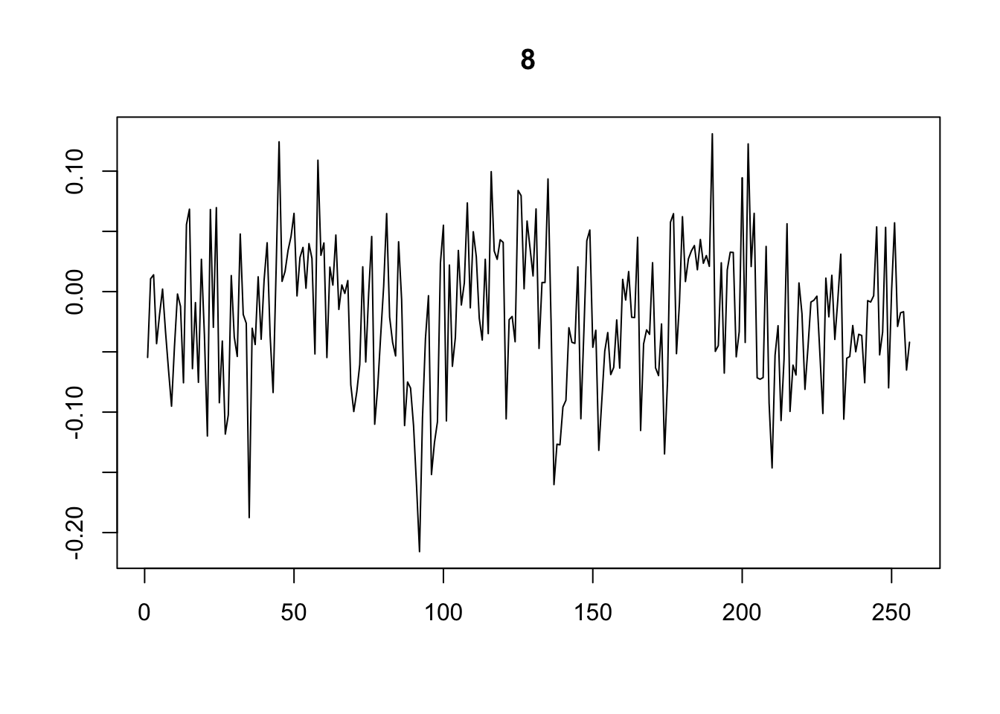

NDWT introduces correlations
Dongyue Xie
2021-09-20
Last updated: 2021-10-02
Checks: 7 0
Knit directory: SMF/
This reproducible R Markdown analysis was created with workflowr (version 1.6.2). The Checks tab describes the reproducibility checks that were applied when the results were created. The Past versions tab lists the development history.
Great! Since the R Markdown file has been committed to the Git repository, you know the exact version of the code that produced these results.
Great job! The global environment was empty. Objects defined in the global environment can affect the analysis in your R Markdown file in unknown ways. For reproduciblity it’s best to always run the code in an empty environment.
The command set.seed(20190719) was run prior to running the code in the R Markdown file. Setting a seed ensures that any results that rely on randomness, e.g. subsampling or permutations, are reproducible.
Great job! Recording the operating system, R version, and package versions is critical for reproducibility.
Nice! There were no cached chunks for this analysis, so you can be confident that you successfully produced the results during this run.
Great job! Using relative paths to the files within your workflowr project makes it easier to run your code on other machines.
Great! You are using Git for version control. Tracking code development and connecting the code version to the results is critical for reproducibility.
The results in this page were generated with repository version c7cd149. See the Past versions tab to see a history of the changes made to the R Markdown and HTML files.
Note that you need to be careful to ensure that all relevant files for the analysis have been committed to Git prior to generating the results (you can use wflow_publish or wflow_git_commit). workflowr only checks the R Markdown file, but you know if there are other scripts or data files that it depends on. Below is the status of the Git repository when the results were generated:
Ignored files:
Ignored: .DS_Store
Ignored: .Rhistory
Ignored: .Rproj.user/
Ignored: analysis/.DS_Store
Ignored: data/.DS_Store
Ignored: data/external_data/
Untracked files:
Untracked: analysis/sparse_smoothing.Rmd
Untracked: code/smash_wave.R
Untracked: code/wave_ebmf_ndwt.R
Untracked: data/luis/
Untracked: output/flash_on_cmc2_reduced.rds
Untracked: output/flash_on_cmc2_reduced_2000kb.rds
Untracked: output/wave_flash_on_cmc2_reduced_2000kb.rds
Unstaged changes:
Modified: analysis/luis_data.Rmd
Modified: analysis/smooth_flash.Rmd
Modified: code/smooth_flash.R
Modified: code/sparseWS.R
Modified: code/wave_ebmf.R
Note that any generated files, e.g. HTML, png, CSS, etc., are not included in this status report because it is ok for generated content to have uncommitted changes.
These are the previous versions of the repository in which changes were made to the R Markdown (analysis/ndwt_wave_ebmf.Rmd) and HTML (docs/ndwt_wave_ebmf.html) files. If you’ve configured a remote Git repository (see ?wflow_git_remote), click on the hyperlinks in the table below to view the files as they were in that past version.
| File | Version | Author | Date | Message |
|---|---|---|---|---|
| Rmd | c7cd149 | Dongyue Xie | 2021-10-02 | wflow_publish(“analysis/ndwt_wave_ebmf.Rmd”) |
Introduction
We compare the performance of 1: ebmf on DWT(Y); 2: ebmf NDWT(Y).
NDWT stands for non-decimated wavelet transformation. The emppirical wavelet coefficients at each level are no longer independent.
source('code/wave_ebmf_ndwt.R')Loading required package: MASSWaveThresh: R wavelet software, release 4.6.8, installedCopyright Guy Nason and others 1993-2016Note: nlevels has been renamed to nlevelsWTLoading flashrset.seed(12345)
N = 50
p = 256
s = 1
pi0 = 0.3
f = c(rep(2,p/4), rep(5, p/4), rep(6, p/4), rep(2, p/4))
l = c(rep(0,N*pi0),
rnorm(N*(1-pi0)/5,0,sqrt(0.25)),
rnorm(N*(1-pi0)/5,0,sqrt(0.5)),
rnorm(N*(1-pi0)/5,0,sqrt(1)),
rnorm(N*(1-pi0)/5,0,sqrt(2)),
rnorm(N*(1-pi0)/5,0,sqrt(4)))
plot(l)plot(f,type='l')
m = tcrossprod(l,f)
y = m+matrix(rnorm(N*p,0,s),ncol=p)fit.dwt = wave_ebmf(y,type='wavelet')[1] "Fitting dimension 1"
[1] "Iteration 1 : obj -18182.655"
[1] "Iteration 2 : obj -18173.416"
[1] "Iteration 3 : obj -18173.138"
[1] "Iteration 4 : obj -18173.137"
[1] "Performing nullcheck"
[1] "Deleting factor 1 decreases objective by 5489.049"
[1] "Fitting dimension 2"
[1] "Iteration 1 : obj -18207.009"
[1] "Iteration 2 : obj -18193.024"
[1] "Iteration 3 : obj -18189.414"
[1] "Iteration 4 : obj -18187.045"
[1] "Iteration 5 : obj -18185.659"
[1] "Iteration 6 : obj -18184.62"
[1] "Iteration 7 : obj -18183.499"
[1] "Iteration 8 : obj -18182.335"
[1] "Iteration 9 : obj -18181.488"
[1] "Iteration 10 : obj -18180.927"
[1] "Iteration 11 : obj -18180.329"
[1] "Iteration 12 : obj -18179.69"
[1] "Iteration 13 : obj -18179.258"
[1] "Iteration 14 : obj -18179.03"
[1] "Iteration 15 : obj -18178.879"
[1] "Iteration 16 : obj -18178.737"
[1] "Iteration 17 : obj -18178.675"
[1] "Iteration 18 : obj -18178.644"
[1] "Iteration 19 : obj -18178.629"
[1] "Iteration 20 : obj -18178.621"
[1] "Performing nullcheck"
[1] "Deleting factor 2 increases objective by 5.484"fit.ndwt = wave_ebmf(y,Kmax=10,type='station')[1] "Fitting dimension 1"
[1] "Iteration 1 : obj -143500.727"
[1] "Iteration 2 : obj -143425.537"
[1] "Iteration 3 : obj -143424.198"
[1] "Iteration 4 : obj -143424.152"
[1] "Iteration 5 : obj -143424.15"
[1] "Performing nullcheck"
[1] "Deleting factor 1 decreases objective by 120164.813"
[1] "Fitting dimension 2"
[1] "Iteration 1 : obj -141277.496"
[1] "Iteration 2 : obj -141238.225"
[1] "Iteration 3 : obj -141232.832"
[1] "Iteration 4 : obj -141229.703"
[1] "Iteration 5 : obj -141227.499"
[1] "Iteration 6 : obj -141225.9"
[1] "Iteration 7 : obj -141224.739"
[1] "Iteration 8 : obj -141223.888"
[1] "Iteration 9 : obj -141223.258"
[1] "Iteration 10 : obj -141222.797"
[1] "Iteration 11 : obj -141222.466"
[1] "Iteration 12 : obj -141222.23"
[1] "Iteration 13 : obj -141222.064"
[1] "Iteration 14 : obj -141221.948"
[1] "Iteration 15 : obj -141221.867"
[1] "Iteration 16 : obj -141221.81"
[1] "Iteration 17 : obj -141221.771"
[1] "Iteration 18 : obj -141221.744"
[1] "Iteration 19 : obj -141221.725"
[1] "Iteration 20 : obj -141221.712"
[1] "Iteration 21 : obj -141221.704"
[1] "Performing nullcheck"
[1] "Deleting factor 2 decreases objective by 2202.447"
[1] "Fitting dimension 3"
[1] "Iteration 1 : obj -139454.692"
[1] "Iteration 2 : obj -139399.937"
[1] "Iteration 3 : obj -139389.778"
[1] "Iteration 4 : obj -139383.507"
[1] "Iteration 5 : obj -139379.115"
[1] "Iteration 6 : obj -139375.872"
[1] "Iteration 7 : obj -139373.453"
[1] "Iteration 8 : obj -139371.65"
[1] "Iteration 9 : obj -139370.341"
[1] "Iteration 10 : obj -139369.408"
[1] "Iteration 11 : obj -139368.738"
[1] "Iteration 12 : obj -139368.25"
[1] "Iteration 13 : obj -139367.891"
[1] "Iteration 14 : obj -139367.622"
[1] "Iteration 15 : obj -139367.418"
[1] "Iteration 16 : obj -139367.262"
[1] "Iteration 17 : obj -139367.141"
[1] "Iteration 18 : obj -139367.045"
[1] "Iteration 19 : obj -139366.97"
[1] "Iteration 20 : obj -139366.91"
[1] "Iteration 21 : obj -139366.862"
[1] "Iteration 22 : obj -139366.824"
[1] "Iteration 23 : obj -139366.793"
[1] "Iteration 24 : obj -139366.768"
[1] "Iteration 25 : obj -139366.747"
[1] "Iteration 26 : obj -139366.731"
[1] "Iteration 27 : obj -139366.717"
[1] "Iteration 28 : obj -139366.706"
[1] "Iteration 29 : obj -139366.697"
[1] "Performing nullcheck"
[1] "Deleting factor 3 decreases objective by 1855.006"
[1] "Fitting dimension 4"
[1] "Iteration 1 : obj -137719.486"
[1] "Iteration 2 : obj -137675.323"
[1] "Iteration 3 : obj -137671.891"
[1] "Iteration 4 : obj -137670.778"
[1] "Iteration 5 : obj -137670.24"
[1] "Iteration 6 : obj -137669.942"
[1] "Iteration 7 : obj -137669.765"
[1] "Iteration 8 : obj -137669.655"
[1] "Iteration 9 : obj -137669.585"
[1] "Iteration 10 : obj -137669.54"
[1] "Iteration 11 : obj -137669.511"
[1] "Iteration 12 : obj -137669.492"
[1] "Iteration 13 : obj -137669.48"
[1] "Iteration 14 : obj -137669.472"
[1] "Performing nullcheck"
[1] "Deleting factor 4 decreases objective by 1697.224"
[1] "Fitting dimension 5"
[1] "Iteration 1 : obj -136548.642"
[1] "Iteration 2 : obj -136510.888"
[1] "Iteration 3 : obj -136508.318"
[1] "Iteration 4 : obj -136507.598"
[1] "Iteration 5 : obj -136507.344"
[1] "Iteration 6 : obj -136507.237"
[1] "Iteration 7 : obj -136507.183"
[1] "Iteration 8 : obj -136507.149"
[1] "Iteration 9 : obj -136507.124"
[1] "Iteration 10 : obj -136507.103"
[1] "Iteration 11 : obj -136507.084"
[1] "Iteration 12 : obj -136507.066"
[1] "Iteration 13 : obj -136507.048"
[1] "Iteration 14 : obj -136507.03"
[1] "Iteration 15 : obj -136507.013"
[1] "Iteration 16 : obj -136506.995"
[1] "Iteration 17 : obj -136506.977"
[1] "Iteration 18 : obj -136506.959"
[1] "Iteration 19 : obj -136506.941"
[1] "Iteration 20 : obj -136506.923"
[1] "Iteration 21 : obj -136506.905"
[1] "Iteration 22 : obj -136506.887"
[1] "Iteration 23 : obj -136506.869"
[1] "Iteration 24 : obj -136506.851"
[1] "Iteration 25 : obj -136506.832"
[1] "Iteration 26 : obj -136506.814"
[1] "Iteration 27 : obj -136506.795"
[1] "Iteration 28 : obj -136506.777"
[1] "Iteration 29 : obj -136506.758"
[1] "Iteration 30 : obj -136506.739"
[1] "Iteration 31 : obj -136506.72"
[1] "Iteration 32 : obj -136506.701"
[1] "Iteration 33 : obj -136506.682"
[1] "Iteration 34 : obj -136506.662"
[1] "Iteration 35 : obj -136506.643"
[1] "Iteration 36 : obj -136506.623"
[1] "Iteration 37 : obj -136506.604"
[1] "Iteration 38 : obj -136506.584"
[1] "Iteration 39 : obj -136506.564"
[1] "Iteration 40 : obj -136506.544"
[1] "Iteration 41 : obj -136506.524"
[1] "Iteration 42 : obj -136506.504"
[1] "Iteration 43 : obj -136506.484"
[1] "Iteration 44 : obj -136506.463"
[1] "Iteration 45 : obj -136506.443"
[1] "Iteration 46 : obj -136506.422"
[1] "Iteration 47 : obj -136506.401"
[1] "Iteration 48 : obj -136506.381"
[1] "Iteration 49 : obj -136506.36"
[1] "Iteration 50 : obj -136506.338"
[1] "Iteration 51 : obj -136506.317"
[1] "Iteration 52 : obj -136506.296"
[1] "Iteration 53 : obj -136506.274"
[1] "Iteration 54 : obj -136506.253"
[1] "Iteration 55 : obj -136506.231"
[1] "Iteration 56 : obj -136506.209"
[1] "Iteration 57 : obj -136506.187"
[1] "Iteration 58 : obj -136506.165"
[1] "Iteration 59 : obj -136506.143"
[1] "Iteration 60 : obj -136506.121"
[1] "Iteration 61 : obj -136506.098"
[1] "Iteration 62 : obj -136506.075"
[1] "Iteration 63 : obj -136506.053"
[1] "Iteration 64 : obj -136506.03"
[1] "Iteration 65 : obj -136506.007"
[1] "Iteration 66 : obj -136505.983"
[1] "Iteration 67 : obj -136505.96"
[1] "Iteration 68 : obj -136505.936"
[1] "Iteration 69 : obj -136505.912"
[1] "Iteration 70 : obj -136505.887"
[1] "Iteration 71 : obj -136505.861"
[1] "Iteration 72 : obj -136505.835"
[1] "Iteration 73 : obj -136505.808"
[1] "Iteration 74 : obj -136505.779"
[1] "Iteration 75 : obj -136505.75"
[1] "Iteration 76 : obj -136505.72"
[1] "Iteration 77 : obj -136505.688"
[1] "Iteration 78 : obj -136505.655"
[1] "Iteration 79 : obj -136505.621"
[1] "Iteration 80 : obj -136505.585"
[1] "Iteration 81 : obj -136505.569"
[1] "Iteration 82 : obj -136505.539"
[1] "Iteration 83 : obj -136505.509"
[1] "Iteration 84 : obj -136505.477"
[1] "Iteration 85 : obj -136505.445"
[1] "Iteration 86 : obj -136505.412"
[1] "Iteration 87 : obj -136505.378"
[1] "Iteration 88 : obj -136505.343"
[1] "Iteration 89 : obj -136505.255"
[1] "Iteration 90 : obj -136505.203"
[1] "Iteration 91 : obj -136505.151"
[1] "Iteration 92 : obj -136505.099"
[1] "Iteration 93 : obj -136505.045"
[1] "Iteration 94 : obj -136504.99"
[1] "Iteration 95 : obj -136504.935"
[1] "Iteration 96 : obj -136504.878"
[1] "Iteration 97 : obj -136504.822"
[1] "Iteration 98 : obj -136504.765"
[1] "Iteration 99 : obj -136504.707"
[1] "Iteration 100 : obj -136504.65"
[1] "Iteration 101 : obj -136504.593"
[1] "Iteration 102 : obj -136504.535"
[1] "Iteration 103 : obj -136504.478"
[1] "Iteration 104 : obj -136504.422"
[1] "Iteration 105 : obj -136504.366"
[1] "Iteration 106 : obj -136504.31"
[1] "Iteration 107 : obj -136504.255"
[1] "Iteration 108 : obj -136504.201"
[1] "Iteration 109 : obj -136504.147"
[1] "Iteration 110 : obj -136504.094"
[1] "Iteration 111 : obj -136504.038"
[1] "Iteration 112 : obj -136503.98"
[1] "Iteration 113 : obj -136503.92"
[1] "Iteration 114 : obj -136503.856"
[1] "Iteration 115 : obj -136503.791"
[1] "Iteration 116 : obj -136503.723"
[1] "Iteration 117 : obj -136503.652"
[1] "Iteration 118 : obj -136503.579"
[1] "Iteration 119 : obj -136503.503"
[1] "Iteration 120 : obj -136503.425"
[1] "Iteration 121 : obj -136503.344"
[1] "Iteration 122 : obj -136503.26"
[1] "Iteration 123 : obj -136503.174"
[1] "Iteration 124 : obj -136503.085"
[1] "Iteration 125 : obj -136502.994"
[1] "Iteration 126 : obj -136502.899"
[1] "Iteration 127 : obj -136502.8"
[1] "Iteration 128 : obj -136502.699"
[1] "Iteration 129 : obj -136502.593"
[1] "Iteration 130 : obj -136502.484"
[1] "Iteration 131 : obj -136502.371"
[1] "Iteration 132 : obj -136502.253"
[1] "Iteration 133 : obj -136502.132"
[1] "Iteration 134 : obj -136502.007"
[1] "Iteration 135 : obj -136501.878"
[1] "Iteration 136 : obj -136501.747"
[1] "Iteration 137 : obj -136501.614"
[1] "Iteration 138 : obj -136501.48"
[1] "Iteration 139 : obj -136501.347"
[1] "Iteration 140 : obj -136501.215"
[1] "Iteration 141 : obj -136501.086"
[1] "Iteration 142 : obj -136500.96"
[1] "Iteration 143 : obj -136500.838"
[1] "Iteration 144 : obj -136500.72"
[1] "Iteration 145 : obj -136500.607"
[1] "Iteration 146 : obj -136500.497"
[1] "Iteration 147 : obj -136500.393"
[1] "Iteration 148 : obj -136500.292"
[1] "Iteration 149 : obj -136500.195"
[1] "Iteration 150 : obj -136500.102"
[1] "Iteration 151 : obj -136500.012"
[1] "Iteration 152 : obj -136499.924"
[1] "Iteration 153 : obj -136499.839"
[1] "Iteration 154 : obj -136499.756"
[1] "Iteration 155 : obj -136499.674"
[1] "Iteration 156 : obj -136499.593"
[1] "Iteration 157 : obj -136499.512"
[1] "Iteration 158 : obj -136499.43"
[1] "Iteration 159 : obj -136499.347"
[1] "Iteration 160 : obj -136499.262"
[1] "Iteration 161 : obj -136499.174"
[1] "Iteration 162 : obj -136499.112"
[1] "Iteration 163 : obj -136498.994"
[1] "Iteration 164 : obj -136498.856"
[1] "Iteration 165 : obj -136498.749"
[1] "Iteration 166 : obj -136498.639"
[1] "Iteration 167 : obj -136498.526"
[1] "Iteration 168 : obj -136498.41"
[1] "Iteration 169 : obj -136498.291"
[1] "Iteration 170 : obj -136498.175"
[1] "Iteration 171 : obj -136498.061"
[1] "Iteration 172 : obj -136497.95"
[1] "Iteration 173 : obj -136497.841"
[1] "Iteration 174 : obj -136497.736"
[1] "Iteration 175 : obj -136497.633"
[1] "Iteration 176 : obj -136497.534"
[1] "Iteration 177 : obj -136497.437"
[1] "Iteration 178 : obj -136497.342"
[1] "Iteration 179 : obj -136497.251"
[1] "Iteration 180 : obj -136497.162"
[1] "Iteration 181 : obj -136497.08"
[1] "Iteration 182 : obj -136496.999"
[1] "Iteration 183 : obj -136496.914"
[1] "Iteration 184 : obj -136496.836"
[1] "Iteration 185 : obj -136496.762"
[1] "Iteration 186 : obj -136496.69"
[1] "Iteration 187 : obj -136496.622"
[1] "Iteration 188 : obj -136496.556"
[1] "Iteration 189 : obj -136496.494"
[1] "Iteration 190 : obj -136496.435"
[1] "Iteration 191 : obj -136496.378"
[1] "Iteration 192 : obj -136496.324"
[1] "Iteration 193 : obj -136496.272"
[1] "Iteration 194 : obj -136496.223"
[1] "Iteration 195 : obj -136496.176"
[1] "Iteration 196 : obj -136496.131"
[1] "Iteration 197 : obj -136496.088"
[1] "Iteration 198 : obj -136496.046"
[1] "Iteration 199 : obj -136496.007"
[1] "Iteration 200 : obj -136495.968"
[1] "Iteration 201 : obj -136495.931"
[1] "Iteration 202 : obj -136495.896"
[1] "Iteration 203 : obj -136495.861"
[1] "Iteration 204 : obj -136495.828"
[1] "Iteration 205 : obj -136495.796"
[1] "Iteration 206 : obj -136495.765"
[1] "Iteration 207 : obj -136495.735"
[1] "Iteration 208 : obj -136495.707"
[1] "Iteration 209 : obj -136495.679"
[1] "Iteration 210 : obj -136495.652"
[1] "Iteration 211 : obj -136495.626"
[1] "Iteration 212 : obj -136495.602"
[1] "Iteration 213 : obj -136495.578"
[1] "Iteration 214 : obj -136495.554"
[1] "Iteration 215 : obj -136495.532"
[1] "Iteration 216 : obj -136495.511"
[1] "Iteration 217 : obj -136495.49"
[1] "Iteration 218 : obj -136495.47"
[1] "Iteration 219 : obj -136495.45"
[1] "Iteration 220 : obj -136495.432"
[1] "Iteration 221 : obj -136495.413"
[1] "Iteration 222 : obj -136495.396"
[1] "Iteration 223 : obj -136495.379"
[1] "Iteration 224 : obj -136495.362"
[1] "Iteration 225 : obj -136495.346"
[1] "Iteration 226 : obj -136495.33"
[1] "Iteration 227 : obj -136495.315"
[1] "Iteration 228 : obj -136495.3"
[1] "Iteration 229 : obj -136495.285"
[1] "Iteration 230 : obj -136495.271"
[1] "Iteration 231 : obj -136495.257"
[1] "Iteration 232 : obj -136495.243"
[1] "Iteration 233 : obj -136495.229"
[1] "Iteration 234 : obj -136495.216"
[1] "Iteration 235 : obj -136495.203"
[1] "Iteration 236 : obj -136495.191"
[1] "Iteration 237 : obj -136495.179"
[1] "Iteration 238 : obj -136495.167"
[1] "Iteration 239 : obj -136495.155"
[1] "Iteration 240 : obj -136495.144"
[1] "Iteration 241 : obj -136495.133"
[1] "Iteration 242 : obj -136495.122"
[1] "Iteration 243 : obj -136495.112"
[1] "Iteration 244 : obj -136495.102"
[1] "Iteration 245 : obj -136495.092"
[1] "Performing nullcheck"
[1] "Deleting factor 5 decreases objective by 1174.38"
[1] "Fitting dimension 6"
[1] "Iteration 1 : obj -135305.685"
[1] "Iteration 2 : obj -135259.356"
[1] "Iteration 3 : obj -135257.328"
[1] "Iteration 4 : obj -135256.98"
[1] "Iteration 5 : obj -135256.881"
[1] "Iteration 6 : obj -135256.845"
[1] "Iteration 7 : obj -135256.83"
[1] "Iteration 8 : obj -135256.823"
[1] "Performing nullcheck"
[1] "Deleting factor 6 decreases objective by 1238.268"
[1] "Fitting dimension 7"
[1] "Iteration 1 : obj -134718.117"
[1] "Iteration 2 : obj -134678.819"
[1] "Iteration 3 : obj -134668.804"
[1] "Iteration 4 : obj -134660.741"
[1] "Iteration 5 : obj -134654.209"
[1] "Iteration 6 : obj -134649.045"
[1] "Iteration 7 : obj -134644.956"
[1] "Iteration 8 : obj -134641.789"
[1] "Iteration 9 : obj -134639.39"
[1] "Iteration 10 : obj -134637.595"
[1] "Iteration 11 : obj -134636.26"
[1] "Iteration 12 : obj -134635.266"
[1] "Iteration 13 : obj -134634.523"
[1] "Iteration 14 : obj -134633.964"
[1] "Iteration 15 : obj -134633.542"
[1] "Iteration 16 : obj -134633.221"
[1] "Iteration 17 : obj -134632.977"
[1] "Iteration 18 : obj -134632.79"
[1] "Iteration 19 : obj -134632.647"
[1] "Iteration 20 : obj -134632.537"
[1] "Iteration 21 : obj -134632.453"
[1] "Iteration 22 : obj -134632.388"
[1] "Iteration 23 : obj -134632.338"
[1] "Iteration 24 : obj -134632.3"
[1] "Iteration 25 : obj -134632.27"
[1] "Iteration 26 : obj -134632.247"
[1] "Iteration 27 : obj -134632.229"
[1] "Iteration 28 : obj -134632.215"
[1] "Iteration 29 : obj -134632.205"
[1] "Iteration 30 : obj -134632.196"
[1] "Performing nullcheck"
[1] "Deleting factor 7 decreases objective by 624.627"
[1] "Fitting dimension 8"
[1] "Iteration 1 : obj -134085.315"
[1] "Iteration 2 : obj -134052.493"
[1] "Iteration 3 : obj -134050.306"
[1] "Iteration 4 : obj -134049.003"
[1] "Iteration 5 : obj -134047.896"
[1] "Iteration 6 : obj -134046.835"
[1] "Iteration 7 : obj -134045.763"
[1] "Iteration 8 : obj -134044.659"
[1] "Iteration 9 : obj -134043.494"
[1] "Iteration 10 : obj -134042.305"
[1] "Iteration 11 : obj -134041.095"
[1] "Iteration 12 : obj -134039.867"
[1] "Iteration 13 : obj -134038.628"
[1] "Iteration 14 : obj -134037.383"
[1] "Iteration 15 : obj -134036.131"
[1] "Iteration 16 : obj -134034.864"
[1] "Iteration 17 : obj -134033.572"
[1] "Iteration 18 : obj -134032.287"
[1] "Iteration 19 : obj -134031.083"
[1] "Iteration 20 : obj -134030.016"
[1] "Iteration 21 : obj -134029.089"
[1] "Iteration 22 : obj -134028.295"
[1] "Iteration 23 : obj -134027.624"
[1] "Iteration 24 : obj -134027.06"
[1] "Iteration 25 : obj -134026.581"
[1] "Iteration 26 : obj -134026.18"
[1] "Iteration 27 : obj -134025.852"
[1] "Iteration 28 : obj -134025.588"
[1] "Iteration 29 : obj -134025.375"
[1] "Iteration 30 : obj -134025.204"
[1] "Iteration 31 : obj -134025.064"
[1] "Iteration 32 : obj -134024.948"
[1] "Iteration 33 : obj -134024.851"
[1] "Iteration 34 : obj -134024.767"
[1] "Iteration 35 : obj -134024.693"
[1] "Iteration 36 : obj -134024.628"
[1] "Iteration 37 : obj -134024.57"
[1] "Iteration 38 : obj -134024.518"
[1] "Iteration 39 : obj -134024.471"
[1] "Iteration 40 : obj -134024.43"
[1] "Iteration 41 : obj -134024.394"
[1] "Iteration 42 : obj -134024.363"
[1] "Iteration 43 : obj -134024.337"
[1] "Iteration 44 : obj -134024.315"
[1] "Iteration 45 : obj -134024.296"
[1] "Iteration 46 : obj -134024.282"
[1] "Iteration 47 : obj -134024.27"
[1] "Iteration 48 : obj -134024.26"
[1] "Performing nullcheck"
[1] "Deleting factor 8 decreases objective by 607.936"
[1] "Fitting dimension 9"
[1] "Iteration 1 : obj -133415.032"
[1] "Iteration 2 : obj -133369.255"
[1] "Iteration 3 : obj -133364.476"
[1] "Iteration 4 : obj -133361.671"
[1] "Iteration 5 : obj -133359.749"
[1] "Iteration 6 : obj -133358.374"
[1] "Iteration 7 : obj -133357.376"
[1] "Iteration 8 : obj -133356.651"
[1] "Iteration 9 : obj -133356.124"
[1] "Iteration 10 : obj -133355.743"
[1] "Iteration 11 : obj -133355.468"
[1] "Iteration 12 : obj -133355.269"
[1] "Iteration 13 : obj -133355.127"
[1] "Iteration 14 : obj -133355.024"
[1] "Iteration 15 : obj -133354.951"
[1] "Iteration 16 : obj -133354.899"
[1] "Iteration 17 : obj -133354.861"
[1] "Iteration 18 : obj -133354.834"
[1] "Iteration 19 : obj -133354.815"
[1] "Iteration 20 : obj -133354.799"
[1] "Iteration 21 : obj -133354.786"
[1] "Iteration 22 : obj -133354.773"
[1] "Iteration 23 : obj -133354.761"
[1] "Iteration 24 : obj -133354.749"
[1] "Iteration 25 : obj -133354.737"
[1] "Iteration 26 : obj -133354.724"
[1] "Iteration 27 : obj -133354.712"
[1] "Iteration 28 : obj -133354.7"
[1] "Iteration 29 : obj -133354.687"
[1] "Iteration 30 : obj -133354.675"
[1] "Iteration 31 : obj -133354.663"
[1] "Iteration 32 : obj -133354.652"
[1] "Iteration 33 : obj -133354.641"
[1] "Iteration 34 : obj -133354.63"
[1] "Iteration 35 : obj -133354.62"
[1] "Iteration 36 : obj -133354.61"
[1] "Performing nullcheck"
[1] "Deleting factor 9 decreases objective by 669.65"
[1] "Fitting dimension 10"
[1] "Iteration 1 : obj -132967.359"
[1] "Iteration 2 : obj -132912.546"
[1] "Iteration 3 : obj -132902.925"
[1] "Iteration 4 : obj -132895.287"
[1] "Iteration 5 : obj -132888.753"
[1] "Iteration 6 : obj -132883.647"
[1] "Iteration 7 : obj -132879.743"
[1] "Iteration 8 : obj -132876.668"
[1] "Iteration 9 : obj -132874.063"
[1] "Iteration 10 : obj -132871.596"
[1] "Iteration 11 : obj -132869.021"
[1] "Iteration 12 : obj -132866.341"
[1] "Iteration 13 : obj -132863.848"
[1] "Iteration 14 : obj -132861.638"
[1] "Iteration 15 : obj -132859.678"
[1] "Iteration 16 : obj -132857.946"
[1] "Iteration 17 : obj -132856.422"
[1] "Iteration 18 : obj -132855.09"
[1] "Iteration 19 : obj -132853.93"
[1] "Iteration 20 : obj -132852.924"
[1] "Iteration 21 : obj -132852.055"
[1] "Iteration 22 : obj -132851.304"
[1] "Iteration 23 : obj -132850.656"
[1] "Iteration 24 : obj -132850.099"
[1] "Iteration 25 : obj -132849.618"
[1] "Iteration 26 : obj -132849.203"
[1] "Iteration 27 : obj -132848.845"
[1] "Iteration 28 : obj -132848.535"
[1] "Iteration 29 : obj -132848.266"
[1] "Iteration 30 : obj -132848.032"
[1] "Iteration 31 : obj -132847.828"
[1] "Iteration 32 : obj -132847.65"
[1] "Iteration 33 : obj -132847.494"
[1] "Iteration 34 : obj -132847.356"
[1] "Iteration 35 : obj -132847.234"
[1] "Iteration 36 : obj -132847.127"
[1] "Iteration 37 : obj -132847.035"
[1] "Iteration 38 : obj -132846.955"
[1] "Iteration 39 : obj -132846.885"
[1] "Iteration 40 : obj -132846.825"
[1] "Iteration 41 : obj -132846.773"
[1] "Iteration 42 : obj -132846.728"
[1] "Iteration 43 : obj -132846.688"
[1] "Iteration 44 : obj -132846.654"
[1] "Iteration 45 : obj -132846.624"
[1] "Iteration 46 : obj -132846.597"
[1] "Iteration 47 : obj -132846.574"
[1] "Iteration 48 : obj -132846.554"
[1] "Iteration 49 : obj -132846.537"
[1] "Iteration 50 : obj -132846.522"
[1] "Iteration 51 : obj -132846.508"
[1] "Iteration 52 : obj -132846.496"
[1] "Iteration 53 : obj -132846.486"
[1] "Iteration 54 : obj -132846.477"
[1] "Performing nullcheck"
[1] "Deleting factor 10 decreases objective by 508.133"fit.dwt$nfactors[1] 1fit.ndwt$nfactors[1] 10I let the ndwt version to have at most 10 factors.
plot(fit.dwt$ldf$f,type='l',xlab='',ylab='',lwd=1,main = 'dwt')
plot(fit.ndwt$ldf$f[,1],type='l',xlab='',ylab='',lwd=1,main = 'ndwt')Look at other factors from ndwt version
for(i in 2:10){
plot(fit.ndwt$ldf$f[,i],type='l',xlab='',ylab='',lwd=1,main = paste(i))
}
sessionInfo()R version 4.0.3 (2020-10-10)
Platform: x86_64-apple-darwin17.0 (64-bit)
Running under: macOS High Sierra 10.13.6
Matrix products: default
BLAS: /Library/Frameworks/R.framework/Versions/4.0/Resources/lib/libRblas.dylib
LAPACK: /Library/Frameworks/R.framework/Versions/4.0/Resources/lib/libRlapack.dylib
locale:
[1] en_US.UTF-8/en_US.UTF-8/en_US.UTF-8/C/en_US.UTF-8/en_US.UTF-8
attached base packages:
[1] stats graphics grDevices utils datasets methods base
other attached packages:
[1] flashr_0.6-7 testthat_3.0.0 wavethresh_4.6.8 MASS_7.3-53
[5] workflowr_1.6.2
loaded via a namespace (and not attached):
[1] pkgload_1.1.0 splines_4.0.3 assertthat_0.2.1 horseshoe_0.2.0
[5] mixsqp_0.3-43 deconvolveR_1.2-1 yaml_2.2.1 remotes_2.2.0
[9] sessioninfo_1.1.1 ebnm_0.1-50 pillar_1.4.6 backports_1.1.10
[13] lattice_0.20-41 glue_1.4.2 digest_0.6.27 promises_1.1.1
[17] colorspace_1.4-1 htmltools_0.5.1.1 httpuv_1.5.4 Matrix_1.2-18
[21] plyr_1.8.6 pkgconfig_2.0.3 devtools_2.3.2 invgamma_1.1
[25] purrr_0.3.4 scales_1.1.1 processx_3.5.1 whisker_0.4
[29] later_1.1.0.1 git2r_0.27.1 tibble_3.0.4 generics_0.1.0
[33] ggplot2_3.3.2 usethis_1.6.3 ellipsis_0.3.1 withr_2.3.0
[37] ashr_2.2-47 cli_2.4.0 magrittr_2.0.1 crayon_1.3.4
[41] memoise_1.1.0 evaluate_0.14 ps_1.4.0 fs_1.5.0
[45] truncnorm_1.0-8 pkgbuild_1.1.0 tools_4.0.3 prettyunits_1.1.1
[49] softImpute_1.4 REBayes_2.2 lifecycle_1.0.0 stringr_1.4.0
[53] trust_0.1-8 munsell_0.5.0 irlba_2.3.3 callr_3.6.0
[57] compiler_4.0.3 rlang_0.4.10 grid_4.0.3 rstudioapi_0.11
[61] rmarkdown_2.5 gtable_0.3.0 DBI_1.1.0 reshape2_1.4.4
[65] R6_2.4.1 knitr_1.30 dplyr_1.0.5 rprojroot_1.3-2
[69] desc_1.2.0 stringi_1.5.3 SQUAREM_2020.5 Rcpp_1.0.5
[73] vctrs_0.3.7 tidyselect_1.1.0 xfun_0.18